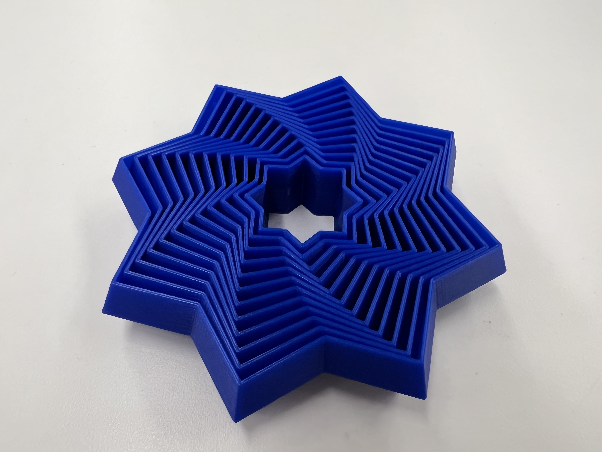
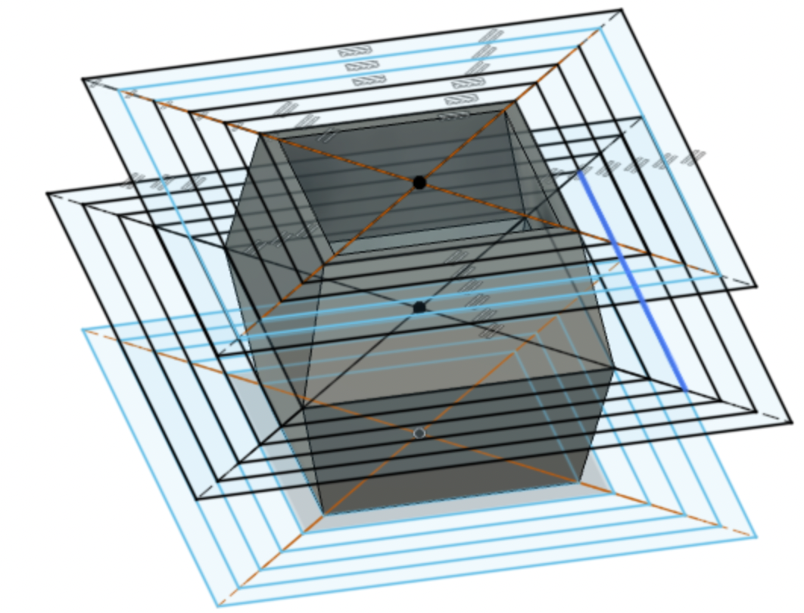
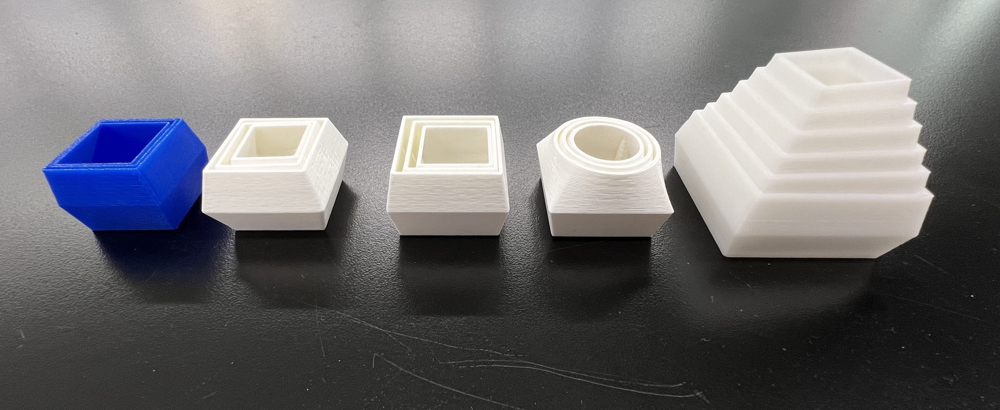
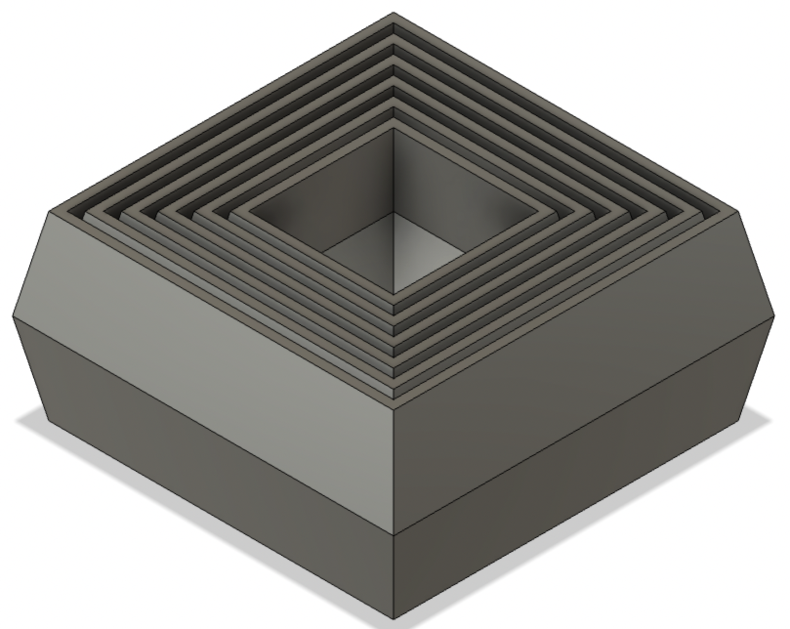

Week 4: 3D Printing
Outline:
This week's goal was understanding the application of 3D printers and getting comfortable with 3D model work in general. I designed a box, scanned a mouse, and more!
3D Printing:
I had made 2-3 prints before taking this class, but was generally unfamiliar with the capabilities of 3D printing. Like any other tool, it has a time and a place. I found print-in-place design to be the most attractive application for this week. This method printing a multi-component design that has its joints already connected, as opposed to snapping them in or otherwise joining them together after the individual components are created. Consider the multiple rings of a gyroscope, but printed layer by layer so they fit perfectly by the end of the print.
After looking through a variety of options, I thought making a variation of this fidget star would be easy enough to iterate, but still provide a challenge in designing.
By printing out the fidget star, I was able to get a better sense of how it moved and its dimensions. I roughly measured these in addition to looking at the digital model to create my own Fidget Square. Switch to Fusion 360, I started with a sketch of inset squares. To create the bevel which holds the inset shapes in as they move up and down, I created 2 offset planes. Each of these planes had the same inset squares, which were a little smaller than those on the base plane. I used the Loft tool to connect one square to another, then used the Shell tool to remove the top and bottom faces. Make sure to turn off sketch visibility when using the Shell tool, otherwise Fusion can misinterpret the target body. See below for model.
I ended up having to iterate a few times, consistently modifying the following dimensions: thickness, distance between inset shapes, and bevel angle. Below are the 5 versions, with the rightmost being my final iteration.

The box has height 2mm, thickness 1mm, distance between shapes 4mm, and difference between the middle square edge and outer square edges of 4mm (the middle edge sticks out 4mm from the rest of the shape). I'm pretty happy with it! I'd add more squares and maybe make the squares pop out a little more. I think by changing the bevel angle from small to large as I moved from the central box to the outermost one, I could produce a more dynamic shape.
3D Scanning:
I used Polycam's photogrammetry mode to construct a 3D scan of my computer mouse. This took a couple tries, as my first pass was missing part of the top and the second pass was missing the entire bottom of the mouse. By the end, I'm pretty happy with how it came out; the mesh has great detail.
Polycam is great for a few reasons, especially for the community component. Here, users can upload their own scans from around the world, both of objects (photogrammetry) and environments (LiDAR).
Final Project Update:
Through learning how to use some of the equipment, I've narrowed down on my interests and am getting a clearer and clearer picture of a final project design.
- MIDI Controller: I spend a lot of my free time listening to or playing music, and would love to create a small keyboard that I could make music with. This project would require a decent amount of electronics, complex mechanisms for the feel and responsivitiy of the keys, and fabrication to make the housing and overall structure. I think the majority of components are already around the shop, although a significant amount of 3D-printed components would be required for housing. In terms of timeline, I'd first like to spend 2 weeks refining the feel and action of a single key. The week after would allow for developing the code, then the 4th week would be a larger scale assembly of the controller. Allowing 2 more weeks for electronics and 1 week for finalization, the project would be mostly assembled by the end of November.
- Motion Study: In addition to this MIDI controller, I'd like to develop a more mechanical project. I've been very excited by the different types of motion seen in the class and through artists like Arthur Ganson. This past week, I designed and fabricated a 4-bar linkage to create a more complicated type of motion than my first kinetic sculpture. I plan to implement it in the next week, and continue developing my understanding of different types of mechanical motion. I I plan to work with crown gears the weak after that, and maybe model some of the designs shown in that one YouTube channel titled thing and then a bunch of numbers. By mid-October, I'd like to incorporate moving characters in a cohesive scene, like a diorama of complex mechanical motion. I would further develop this with more complex scenes and variety of materials.